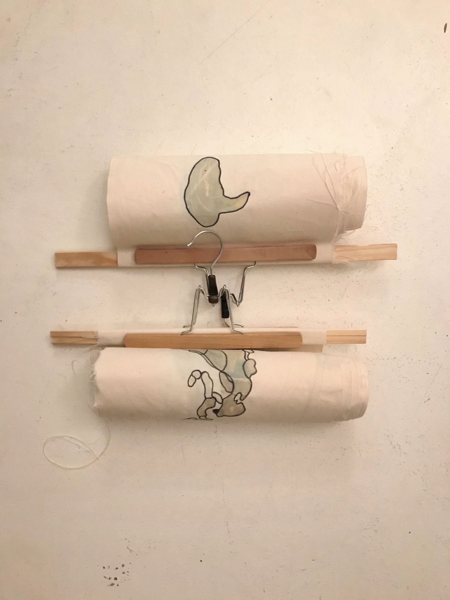

Arnaldo González
ART PEEP SHOW
March 22nd to March 28th, 2021
7 days 7 artists
Daily changing artistic productions in the windows of the Kultur Funke, Königstr.
32, 23552 Lübeck, Germany
Arnaldo Gonzáez Mo 22.03
Swen Kählert Di 23.03
Mesaoo Wrede Mi 24.03
Christin Botzenhard Do 25.03
*durbahn Fr 26.03
Petra Legermann Sa 27.03
Alexander von Agoston So 28.03
körpe[h]rlich, group exhibition in the XponArt Gallery, Hamburg 2020 - 2021, Germany. Also virtual view* (link below)
Anna Goldmund, Antje Flotho, Arnaldo González, Bianca Müllner, Ehsanul Karim Aninda, Gloria Garrels, Heiko Lietz, Joan Marrero, Kathrin Brunnhofer, Kathrin Jakubzik, Majo, Mario A. Chavarría, Mathias Will Und Elisa Rivera, Nika Und Solomia Kushnir, Peggy Stahnke, Simone Fezer, Viola Lour
Introduction to the cryptoart world with the first NFT-art by Arnaldo González. Available Now 5 limited editions of the moving portrait "arnaldo arnaldo 001" in collectible Gif format from the "Rarible" platform